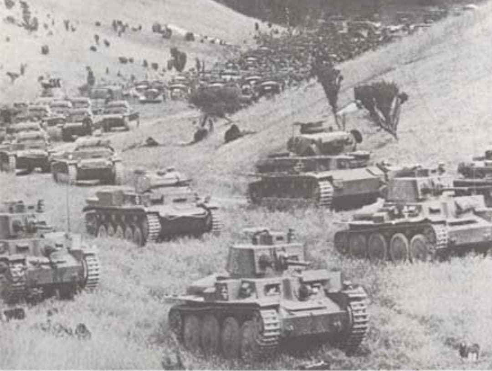
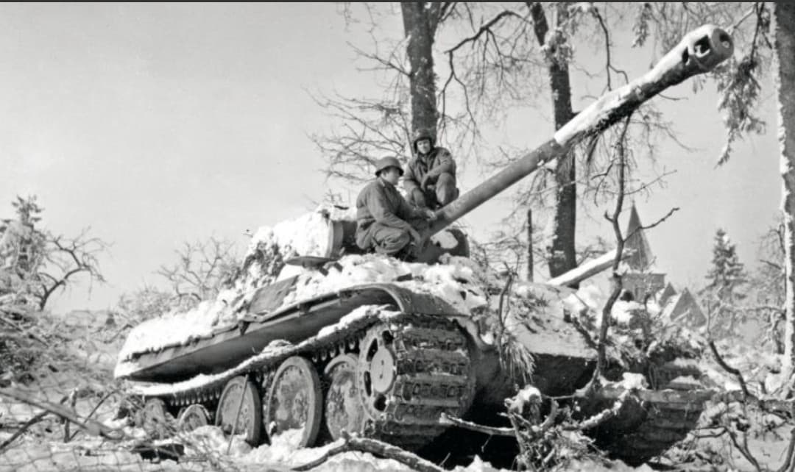
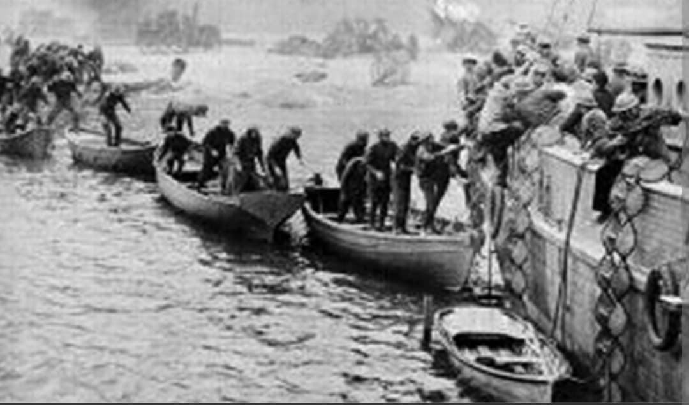
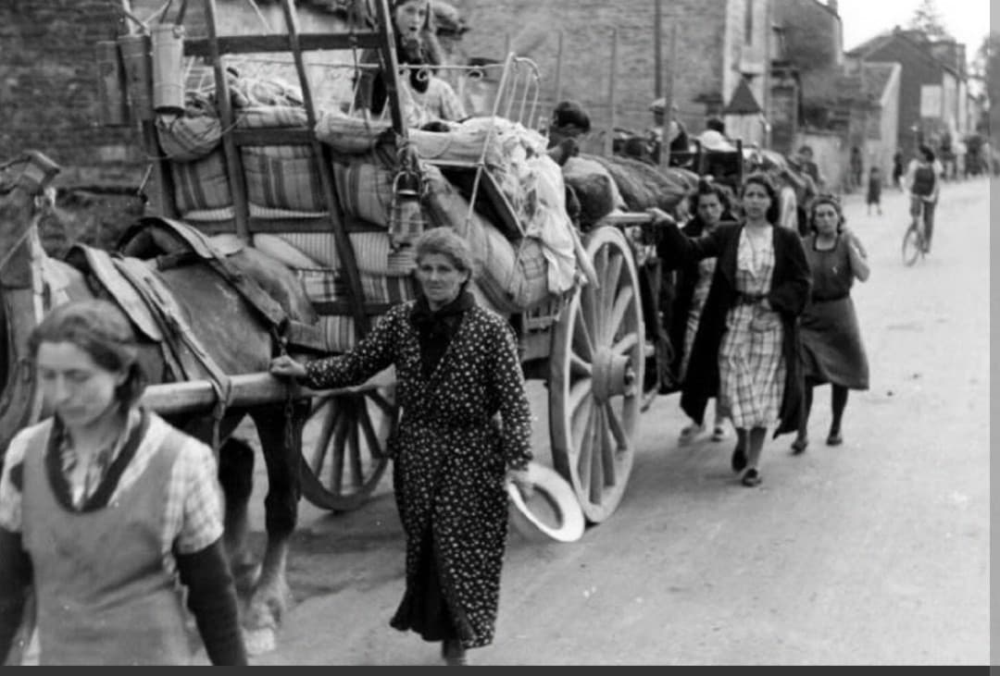

De l'offensive allemande du 10 mai et la percée des Ardennes à l'encerclement de Dunkerque, l'Exode et l'armistice du 22 juin 1940

Du 10 mai au 22 juin 1940, la Bataille de France oppose les armées alliées (française, britannique, belge et néerlandaise) à la Wehrmacht. En seulement six semaines d'une campagne d'une violence extrême, l'armée allemande applique la doctrine de la guerre éclair (Blitzkrieg) et provoque l'effondrement militaire de la France.
Cette défaite fulgurante bouleverse l'équilibre européen, entraîne la chute de la IIIe République, quatre années d'Occupation allemande et la naissance de la Résistance.
Le 10 mai 1940 à 5h35, l'Allemagne met fin aux huit mois de la « Drôle de guerre » en déclenchant l'opération Fall Gelb (Plan Jaune). La Wehrmacht envahit simultanément les Pays-Bas, la Belgique et le Luxembourg, tandis que la Luftwaffe bombarde les aérodromes et les nœuds ferroviaires du nord de la France.
Conformément à la manœuvre alliée (plan Dyle-Breda), les meilleures divisions françaises et le Corps expéditionnaire britannique (BEF) entrent immédiatement en Belgique pour bloquer l'avance ennemie. Pendant ce temps, le groupe d'armées A allemand, concentrant l'essentiel des divisions blindées (Panzerdivisionen commandées notamment par Guderian et Rommel), franchit le massif boisé des Ardennes, pourtant jugé infranchissable par le haut commandement français.
Entre le 13 et le 15 mai, appuyés par les bombardiers en piqué Stuka (Ju 87), les chars allemands traversent la Meuse à Sedan, Dinant et Monthermé, enfonçant le front tenu par des divisions françaises de réserve.

Effectuant un « coup de faux » fulgurant vers l'ouest, les blindés allemands atteignent la côte de la Manche à Abbeville dès le 20 mai 1940, coupant en deux les armées alliées. Près d'un million de soldats français, britanniques et belges se retrouvent encerclés dans le Nord et le Pas-de-Calais.
Malgré des contre-attaques locales (comme celle de Montcornet menée par le colonel Charles de Gaulle ou la bataille d'Arras), la poche se resserre autour du port de Dunkerque. Du 26 mai au 4 juin 1940, l'Opération Dynamo permet d'évacuer par mer vers l'Angleterre environ 338 000 soldats alliés (dont plus de 120 000 Français), grâce au sacrifice héroïque des arrière-gardes françaises qui défendent la poche de Lille et le périmètre dunkerquois jusqu'à épuisement de leurs munitions.

Pris de panique par la rapidité de l'invasion et les bombardements aériens, près de 8 millions de civils belges et français jettent leurs biens sur des charrettes, des vélos ou des voitures surchargées et fuient vers le sud de la Loire.
Les axes routiers sont totalement paralysés, gênant le déploiement des renforts militaires français, tandis que les colonnes de réfugiés subissent les mitraillages de l'aviation allemande.

Le 5 juin 1940, la Wehrmacht lance la seconde phase de son offensive vers le sud (Fall Rot – Plan Rouge). Malgré une résistance acharnée sur la Somme, l'Aisne, la Loire (notamment les Cadets de Saumur) et dans les ouvrages invaincus de la ligne Maginot, le front français cède sous le nombre et la maîtrise absolue du ciel par la Luftwaffe.
Le 10 juin, l'Italie fasciste déclare la guerre à la France ; le 14 juin, les troupes allemandes entrent dans Paris déclarée « ville ouverte ». Replié à Bordeaux, le gouvernement laisse place au maréchal Philippe Pétain, qui demande l'arrêt des combats.
L'armistice est signé le 22 juin 1940 à Rethondes (dans le wagon même de l'armistice de novembre 1918), tandis que depuis Londres le général de Gaulle a lancé son appel à poursuivre le combat le 18 juin 1940.
Contrairement au mythe d'une défaite sans combat, la campagne de mai-juin 1940 fut d'une extrême intensité. En six semaines d'affrontements, l'armée française déplore entre 60 000 et 90 000 soldats tués au combat, plus de 200 000 blessés et environ 1,8 million de prisonniers de guerre envoyés en captivité dans les camps en Allemagne.
Page du Musée HOP WW2 – Section Histoire & Mémoire